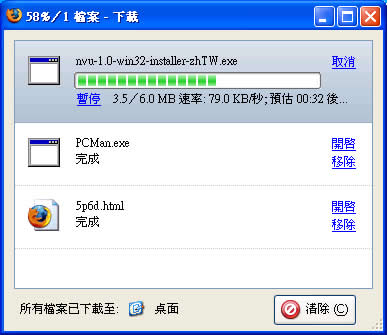

Firefox 重要特色
除了前面列出的創新特色之外，Firefox 還搭載了許多強大功能。如安全性和隱私控制、自動更新、即時書籤、下載管理員、分頁瀏覽等，Firefox 是您上網瀏覽時的最佳伴侶。
自動化更新
一旦有安全更新或產品升級，Firefox 的更新系統便會提醒您，您可自行決定立即安裝更新或以後再安裝。如有要事，您也可以隨時暫停下載更新檔，稍後再續傳。安全更新檔大多在 200KB 到 700KB 之間，輕鬆下載安裝、隨時保持更新。
自動更新系統提供四十種語言以上的 Firefox，同步支援 Windows、Mac OS X 及 Linux 作業系統。企業內部也能自訂更新系統，為其專用的 Firefox 解決方案進行更新。

清除隱私資料
只要點一下，Firefox 就能幫您清除所有私人瀏覽資料，使用家用或公用電腦時都將更安心。
您可以按下「工具」中的「清除隱私資料」，或以鍵盤按下 Ctrl+Shift+Delete (Windows) 或 Cmd+Shift+Delete (Mac) 便能保護隱私。

惡意軟體防護
沒有您的同意，Firefox 不會允許網站下載、安裝或執行檔案。當有檔案能下載或安裝時，網頁上方的資訊列會通知您。

加密網路連線
Firefox 支援最新的資料加密技術，保護您在使用 SSL 3.0 及 TLS 1.0 等加密標準的安全網站連線時不被攔截私密資訊。
當您連線到加密網站時，網址會以亮黃色標示且後面會出現鎖頭圖示表示您正使用加密連線。按一下網址列上的鎖頭圖示會顯示更多安全資訊。
除了新加入的防詐騙功能之外，每個安全網站的視窗右下角都會顯示連線到的網域名稱，如：「login.fidelity.com」。如果有駭客想在網址列內顯示的網址動手腳，您還是可以透過右下角查看真實的網域名稱。


尋找資料更快速
Firefox 中文版於位址列直接整合 Yahoo!奇摩 搜尋功能，直接輸入「中央氣象局」、「鐵路時刻表」等字詞便能即刻搜尋。
尋找文字
找到您想看的網頁後，Firefox 可以更進一步幫您找到所需資訊的確切位置。按下 Ctrl+F (Windows) 或 Cmd+F (Mac) 可叫出文字搜尋工具列，接著逐字打入您要找尋的關鍵詞便可搜得資訊，甚至能將網頁中所有相同文字以高亮度標示。除了網頁內容外，Firefox 也找得到表單中輸入的文字。

阻擋彈出型視窗
Firefox 能阻擋更多彈出型視窗，包括從外掛程式（Flash, Java 等）產生的視窗。當 Firefox 阻擋彈出型視窗時會用視窗上方的資訊列或右下角的圖示通知您，讓您選擇是否要顯示該視窗，或把特定網站加到允許清單中永不阻擋。所以您不需要再花時間處理這些會讓人分心的廣告視窗了。

即時書籤
「即時書籤」能讓您從工具列或書籤選單中直接閱讀 RSS 新聞和部落格文章標題。只要瞧一眼就能快速掌握您常逛網站的最新消息，直接閱讀您有興趣的文章。

下載管理員
Firefox 的下載管理員會顯示目前下載檔案的狀態和已下載完成的檔案清單。您能隨時暫停或續傳檔案，還能看看下載完的檔案到底會放到哪個資料夾。您甚至還可以從下載管理員裡直接開啟檔案。

匯入精靈
Firefox 可以從其他已安裝的瀏覽器中匯入設定。當您第一次啟動 Firefox 時，「匯入精靈」會自動出現，您也可以從「檔案＞匯入」手動啟動它。「匯入精靈」能匯入我的最愛、偏好設定、Cookies、已存密碼和其他個人資訊，所以您不必擔心換個瀏覽器就要重頭開始。

關鍵字
「關鍵字」功能讓您更輕鬆找到字詞定義、股市指數等想要的資訊。任何搜尋引擎都能建立關鍵字，比方愛書人可以在 Amazon 的搜尋欄中按右鍵，然後選「將此次搜尋設為可用關鍵字搜尋」後再想一個關鍵字，如：「amzn」。完成後要在 Amazon 找書變得輕而易舉，只要在網址列中輸入「amzn <書名>」就行了。
無障礙介面
Firefox 承諾帶給每個人更佳的網路體驗，當然也包含身心障礙使用者在內。Firefox 領先支援 DHTML 無障礙技術，網頁開發者能藉此技術設計網頁，減少身心障礙使用者閱讀時所需的按鍵次數。
Firefox 也支援 Microsoft Active Accessibility 技術，這是 Windows 上 Microsoft 與無障礙輔助功能有關的 API 標準。如此一來支援此標準的螢幕閱讀程式（如 Window-Eyes 及 JAWS）就能用在 Firefox 上。「螢幕閱讀程式」是一種能念出程式或文件中有用訊息、並顯示在「點字閱讀器」上的軟體。